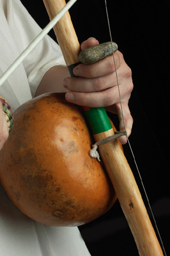
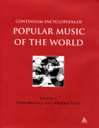

Berimbau — статья из Contemporary Encyclopedia of Populal Music of the World
В виду того, что в обозримом будущем есть план по появлению нескольких статей, связанных с ролью беримбау в современном музыкальном мире, решил начать с малого и основного. Вашему вниманию предлагается краткая справка из энциклопедии современной музыки — «что же такое Беримбау?».
Беримбау
(Richard P. Graham и N. Scott Robinson)
 
Berimbau de barriga — бразильский струнный инструмент с резонатором из высушенной тыквы, имеющий африканские корни. Инструмент состоит из 4-5 футовой (1,2-1,5 м) палки из biriba (дерево, произрастающее в Бразилии), бамбука, дуба или другой древесины согнутой в арку. Эта дуга натягивается одной металлической струной, обычно индустриального производства.
К выпуклой задней стороне арки с помощью короткой петли присоединяется тыквенный резонатор, либо резонатор из кокоса, пустой канистры или любого другого заменителя тыквы. Петля крепления служит также перемычкой, делящей, наподобии гитарного лада, струну на две части. Мизинец левой руки (применительно к музыканту играющему правой рукой) пропускается снизу петли, и за эту петлю музыкант держит инструмент.
При игре, по струне ударяют тонкой палочкой, называемой vaquita или vareta ,которую музыкант держит в правой руке вместе с маленькой корзинкой-погремушкой, называемой caxixi. Небольшая металлическая монета (dobrão) или камень (pedra) зажимается между большим и указательным пальцами левой руки и и во время игры прижимается к струне, в результате чего звук повышается на большую или малую секунду относительно основного тона беримбау.
Berimbau появляется в Бразильской среде рабов в начале 19 го века. Различные исторические текстовые и изображения того периода демонстрируют постоянное наличие разнообразных музыкальных луков центральноафриканского происхождения (Koster 1816, 122; Graham 1824, 199; Walsh 1830, 175-176; Debret 1834, 39; Wetherell 1860, 106-107). Пользующиеся популярностью среди Афро-Бразильских торговцев и уличных музыкантов, эти музыкальные луки были известны под африканскими именами: urucungu, madimba lungungo, mbulumbumba, и hungu (Shaffer 1976, 14; Kubik 1979, 30). В результате распространения пан-Африканских технологий, органологические признаки всех этих различных музыкальных луков смешались и привели к созданию одного Афро-Бразильского инструмента. (Graham 1991, 6).
Во второй половине 19 го века этот музыкальный лук получает португалозвучащее имя — berimbau de barriga, или „варган живота“— и входит в новую культурную среду -афро-бразильское боевое искусство, известное как capoeira (капоэйра) (Kubik 1979, 30-33). Начиная, по-крайней мере, с начала 19 го века, поединки в капоэйре проводились под аккомпанемент африканских барабанов или просто хлопков. В настоящее время основным аккомпанементом капоэйры являются toques (ритмы) беримбау, под сопровождение песен, известных как cantigas de capoeira.
Ансамбль музыкантов, задействованных в современной капоэйре содержит от одного до 3х беримбау, atabaque (конический перкуссионный барабан), pandeiro (бубен) и agogô (двойной колокольчик). Когда в ансамбле играют несколько беримбау, они часто настраиваются на различную высоту. В Salvador de Bahia, культурном эпицентре капоэйры, используются различные названия для беримбау различных размеров, например viola (беримбау с маленьким резонатором), medio (со средним) и gunga или berra-boi (беримбау с большим резонатором). (Lewis 1992, 137). Начиная с 1940х годов, различные школы капоэйры в Бразилии начали раскрашивать беримбау и украшать их цветными лентами другими предметами, отражающими принадлежность к конкретной академии (Shaffer 1976, 26).
Richard P. Graham
Memphis, Tennessee
Библиография:
Debret, Jean-Baptiste. Voyage pittoresque et historique au Bresil [A Picturesque and Historical Voyage to Brazil]. Paris: Firmin Didot Frères, 1834.
Graham, Maria. Journal of a Voyage to Brazil. London: Longman, 1824.
Graham, Richard. «Technology and Culture Change: The Development of the Berimbau in Colonial Brazil.» Latin American Music Review 12, no. 1 (Spring/Summer 1991): 1-20.
Graham, Richard and N. Scott Robinson. «Historical and Musical Introduction to the Berimbau.» LP Highlights in Percussion 3, no. 1 (1988): 14, 16.
Koster, Henry. Travels in Brazil. London: Longman, 1816.
Kubik, Gerhard. Angolan Traits in Black Music, Games and Dances of Brazil: A Study of African Cultural Extensions Overseas. Lisbon: Junta de Investigações Científicas do Ultramar, 1979.
Lewis, J. Lowell. Ring of Liberation: Deceptive Discourse in Brazilian Capoeira. Chicago: University of Chicago Press, 1992.
Shaffer, Kay. O berimbau-de-barriga e seus toques [The Berimbau and Its Rhythms]. Rio de Janeiro: Ministerio da Educação e Cultura, 1976.
Walsh, Robert. Notices of Brazil in 1828 & 1829. London: F. Westey & A. H. Davis, 1830.
Wetherell, James. Brazil — Stray Notes from Bahia: Being Extracts from Letters, & C., During a Residence of Fifteen Years. Liverpool: Webb and Hunt, 1860.
Перевод Téman Gvozd — давно дело было, руки только дошли до разбора статей